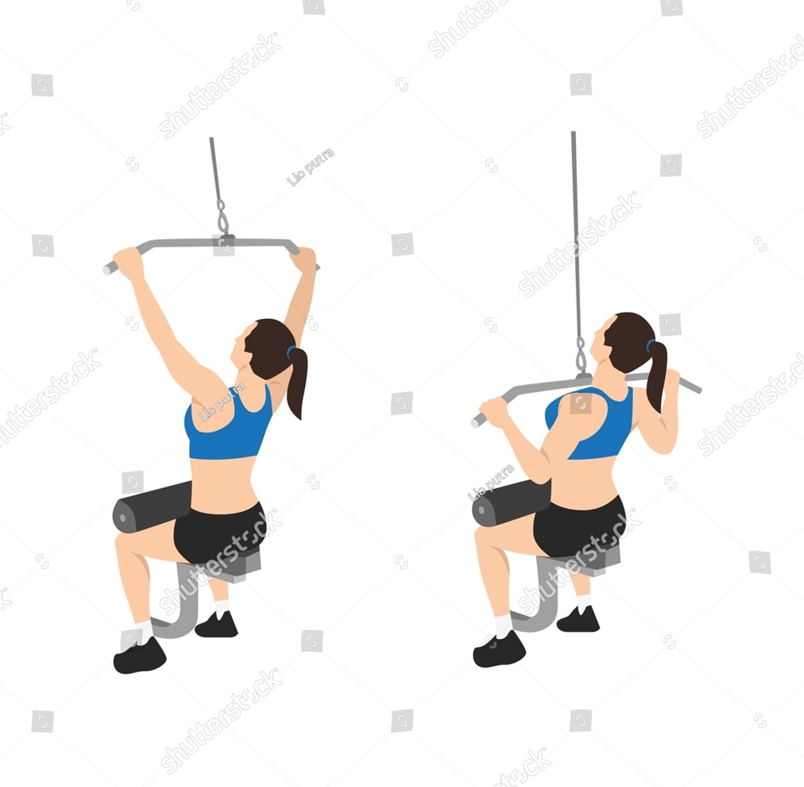

Exercise Description
Sit at a lat pulldown machine with your knees secured. Grip the bar wider than shoulder-width, palms facing away. Pull the bar down to your chest, then slowly return to the starting position.
Reps and Sets
Beginners: 3 sets of 10-12 reps
Weights: 20-25 kg
Rest time between each set: 45secs
Video Implementation